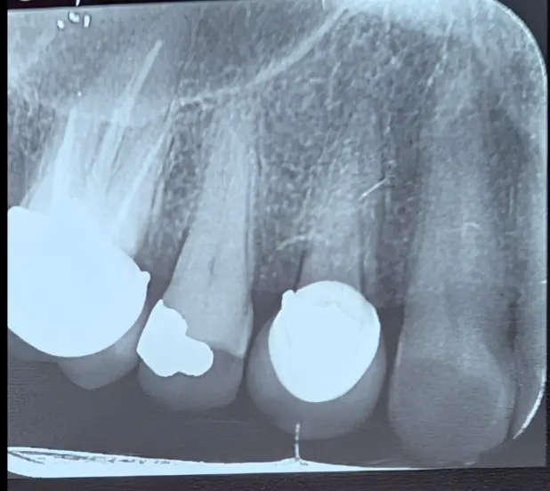

نسخه استخراجشده؛ ترجمه یا تأیید علمی انجام نشده است. وضعیت: captured
بیمار با درد شدید سمت راست فک بالا آمده است و دقیقاً به ناحیهی دندان ۵ اشاره میکند. دندان ۵ سایش شدید دارد و دندان ۴ بهتازگی روکش شده است. کدام دندان مقصر است؟

هم آدرسدهی بیمار و هم ظاهر دندانها انگشت اتهام را به سمت پرمولر دوم میبرند. ولی اکتفا به ظاهر فریبنده است: همیشه «درد» جایی نیست که بیمار نشان میدهد.
در دردهای شدید، پدیدهی درد ارجاعی میتواند هم بیمار و هم دندانپزشک را گمراه کند. تنها تستهای دقیق اندو میتواند مجرم واقعی را از دندانهای کناری تمیز دهد؛ دیدن، جای آزمودن را نمیگیرد.
طرح درمان مشخص شد: خارج کردن روکش، درمان ریشه و پروتز مجدد. ولی بیمار بهشدت مستأصل بود، اصرار داشت کار همان لحظه انجام شود و اصلاً تمایل نداشت به درمانگر قبلی مراجعه کند.
برای جلوگیری از مسائل قانونی (Medico-legal)، دستکم مرحلهی خارج کردن روکش تازه باید توسط درمانگر قبلی انجام شود. این کار دو فایده دارد:
همیشه «درمان فوری» بهترین لطف به بیمار نیست. عجله در کمک به بیمار مستأصل نباید باعث شود مسئولیت کورکورانهی یک طرح درمان نامشخص را بپذیری؛ ارجاع به همکار قبلی فقط برای خارج کردن روکش، مسیر درمان را شفاف میکند و از دردسرهای قانونی پیشگیری میکند.
نوع سؤال: ساخت کلمه · 6 خانه
حروف منبع: و · ی · ن · ن · ا · ق